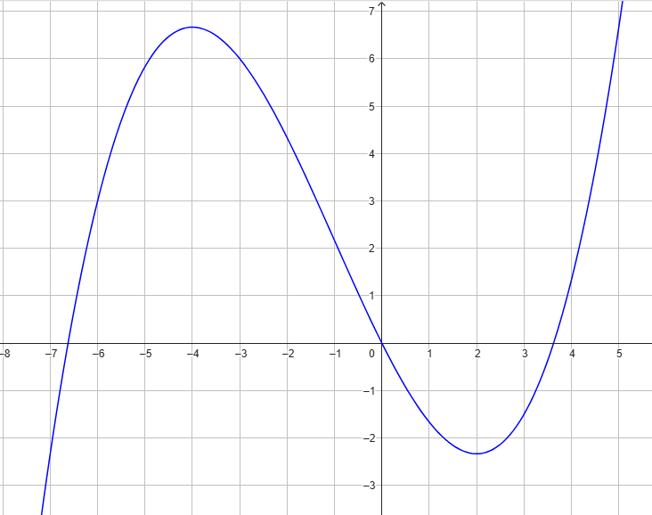

Consideriamo la funzione \(f\) che espime una quantità \(y\) rispetto alla quantità \(y\), ovvero
\[
y = f(x)
\]
Il grafico della funzione è rappresentato di seguito.

Stabilire se le seguenti affermazioni sono vere o false.
Motivare ciascuna risposta.
-
\(f(-6) = 3\)
-
\(f(0) = 1\)
-
\(f(5) < 0\)
-
\(4 \lt f(-2) \lt 5\)
-
\(f(x) \gt 0\) se \(-6 \lt x \lt -1\)
⚠️⚠️ Le domande sono scritte in linguaggio simbolico. Cliccandoci sopra apparirà un testo che
spiega come leggerle ed interpretarle.